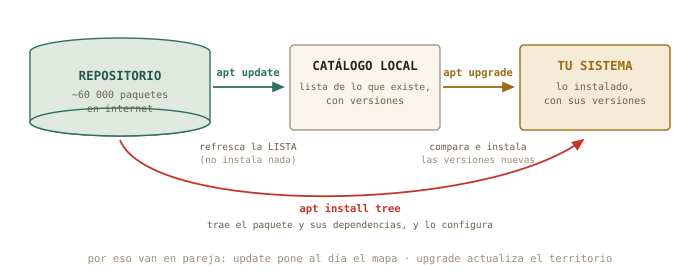
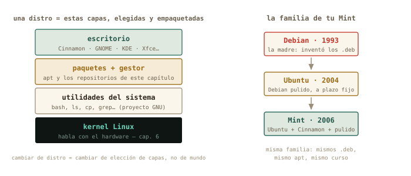
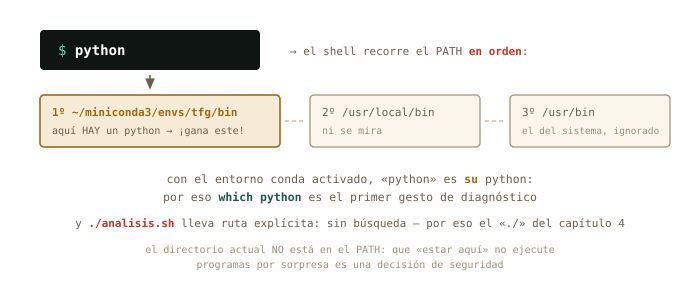

5 Paquetes y procesos
Dos misterios cotidianos caen hoy. Primero: qué pasa de verdad cuando el Gestor de software instala un programa — vas a hacerlo tú por debajo, con apt. Segundo: qué está ejecutándose ahora mismo en tu máquina, cómo vigilarlo y cómo rematar un programa colgado. Y de postre, la deuda del capítulo 4: por qué ./, qué es el $PATH, y el clásico «este no es mi Python» que algún día te robará una tarde si hoy no lo desactivamos.
Al terminar esta sesión sabrás
- Instalar, buscar y desinstalar programas con
apt, y qué son un repositorio y una dependencia. - La diferencia exacta entre
apt updateyapt upgrade(y por qué van siempre en pareja). - Qué es una distro de verdad — kernel, utilidades, paquetes, escritorio — y de qué familia es tu Mint.
- Ver los procesos vivos con
ps,topyhtop, y terminar uno colgado conkill. - Lanzar tareas en segundo plano con
&. - Leer el
$PATH: por qué./, y por qué a vecespythonno es el Python que crees.
5.1 Instalar por debajo del envoltorio
Cada vez que el Gestor de software de Mint instala algo, quien trabaja es apt (Advanced Package Tool). Un programa en Linux se distribuye como paquete — el programa, más sus metadatos: versión, de qué otros paquetes depende — y los paquetes viven en repositorios: almacenes en internet mantenidos por tu distro, con decenas de miles de paquetes verificados. Tu máquina guarda un catálogo local con la lista de lo que existe; instalar es elegir del catálogo.

apt. La confusión clásica del principiante es creer que update actualiza programas: solo refresca la lista.
Vamos a instalar algo útil para el resto del capítulo. Tres pasos: refrescar el catálogo, buscar, instalar — los dos que tocan el sistema piden sudo, y ahora sabes exactamente por qué:
marcos@portatil:~$ sudo apt update
[sudo] contraseña de marcos:
Obj:1 http://packages.linuxmint.com xia InRelease
Des:2 http://archive.ubuntu.com/ubuntu noble-updates InRelease [126 kB]
Leyendo lista de paquetes... Hecho
marcos@portatil:~$ apt search ^htop
htop/noble 3.3.0-4 amd64
interactive processes viewer
marcos@portatil:~$ sudo apt install htop
Leyendo lista de paquetes... Hecho
Creando árbol de dependencias... Hecho
Se instalarán los siguientes paquetes NUEVOS:
htop
Configurando htop (3.3.0-4) ...Fíjate en «árbol de dependencias»: si el paquete necesita bibliotecas que no tienes, apt las localiza, las trae y las instala en el orden correcto, solo. Esa resolución automática — que hoy parece obvia — es el gran invento de este sistema. Desinstalar es sudo apt remove htop; y la pareja sudo apt update && sudo apt upgrade es exactamente lo que el escudito de actualizaciones de Mint hace por ti cada semana.
✚ Truco · Las dos caras del mismo catálogo
El Gestor de software y Synaptic (el gestor gráfico veterano, más detallista) son interfaces del mismo apt: mismo catálogo, mismos paquetes, mismos botones de fondo. Para descubrir software con capturas y reseñas, la vía gráfica es estupenda. La terminal gana en precisión — versiones exactas, apt show — y sobre todo donde no hay botones: tu futuro servidor. Usa la que pida el momento.
5.2 Qué es una distro (ahora ya lo puedes entender)
Con el vocabulario de hoy, la pregunta «¿qué Linux tienes?» por fin tiene respuesta técnica. Linux, en rigor, es solo el kernel: el núcleo que habla con el hardware. Encima van las utilidades del sistema (bash, ls, grep… — el proyecto GNU), encima el sistema de paquetes con sus repositorios, y encima el escritorio. Una distribución es una elección concreta y empaquetada de todas esas capas.

Tu Mint pertenece a la familia Debian: hereda de Ubuntu, que hereda de Debian, y por eso este capítulo te sirve igual en las tres — y en el Debian sin escritorio que instalarás en el bloque C. Cuando leas «Fedora usa dnf» o «Arch usa pacman», ya sabes qué significa: otra familia, otro gestor de paquetes, mismas ideas. Y los escritorios — Cinnamon en tu Mint, GNOME, KDE, Xfce — son la capa más visible y la menos profunda: mismo sistema debajo, distinta carrocería.
◷ Historia · Debra, Ian, y el infierno de las dependencias
Debian nació en 1993, bautizado por su creador con su nombre y el de su pareja: Debra + Ian Murdock. Su gran legado llegó en 1998 con apt: hasta entonces, instalar un programa era perseguir a mano la cadena de bibliotecas que necesitaba — el «infierno de las dependencias» que todavía traumatiza a los veteranos. La resolución automática de apt lo enterró, y la idea es hoy universal: pip y conda en Python son descendientes directos de ese concepto. Cuando esta tarde apt te resuelva un árbol de dependencias en un segundo, levanta la vista un momento: estás viendo el invento de Ian.
5.3 Qué está pasando ahora mismo: procesos
Un proceso es un programa en ejecución: el fichero ejecutable era la partitura, el proceso es el concierto. Cada uno tiene un número único — el PID — y un dueño, con sus permisos del capítulo 4. ps los lista; la variante que verás en todas partes es ps aux (todos los procesos, de todos los usuarios, con detalle):
marcos@portatil:~$ ps aux | wc -l
312
marcos@portatil:~$ ps aux | grep firefox
marcos 8113 4.2 3.1 ... /usr/lib/firefox/firefoxTrescientos procesos y solo tienes tres ventanas abiertas: el resto es el sistema trabajando — servicios, el escritorio, controladores. Y sí: acabas de filtrar procesos con las tuberías del capítulo 3, porque ps escupe texto como todo el mundo.
Para vigilar en directo está top, y su versión moderna — la que instalaste hace un rato — htop:
marcos@portatil:~$ htopUn panel vivo: barras de CPU por núcleo, memoria, y la lista de procesos ordenada por consumo, actualizándose sola. Se sale con q, como en less — y con F6 eliges por qué columna ordenar. Cuando el ventilador de tu portátil despegue en mitad de una simulación, htop es la primera ventanilla de información: qué proceso, cuánta CPU, cuánta memoria.
✚ Truco · La versión con gráficas
El Monitor del sistema de Mint (menú → Administración) es esta misma información con gráficas de colores — perfectamente digno para un vistazo rápido. htop gana en detalle, en velocidad… y en que funciona idéntico dentro del servidor sin ventanas al que te conectarás por SSH. Aprendido una vez, vale en todas partes.
5.4 Terminar lo colgado: señales y kill
El caso real: tu script de análisis lleva veinte minutos en un bucle del que no va a salir. Los procesos se gobiernan mandándoles señales. Una ya la usas sin saberlo: Ctrl+C en la terminal envía SIGINT — «interrúmpete» — al proceso que ocupa el primer plano. Para un proceso que no está en tu terminal, la señal se envía por PID:
marcos@portatil:~$ ps aux | grep analisis
marcos 9204 98.7 0.4 ... python analisis.py
marcos@portatil:~$ kill 9204kill, pese al nombre, es educado: envía SIGTERM — «termina, por favor» — y el proceso puede cerrar ficheros y despedirse. Si lo ignora, queda el recurso final: kill -9, SIGKILL, que no se puede ignorar ni atender — el kernel lo elimina en seco. La diferencia importa: es apagar la centrífuga con su rampa de frenado frente a cortarle la corriente. La segunda funciona siempre, pero lo que hubiera a medio escribir se queda a medias. Protocolo: primero kill, cinco segundos de cortesía, y solo entonces kill -9.
5.5 Segundo plano: el &
Hasta hoy, cada comando secuestra tu terminal hasta terminar. Un & al final lo lanza al segundo plano y te devuelve el prompt:
marcos@portatil:~$ sleep 600 &
[1] 9871
marcos@portatil:~$ jobs
[1]+ Ejecutando sleep 600 &El shell te dice su número de trabajo [1] y su PID. jobs lista lo que tienes en marcha; fg lo trae de vuelta al primer plano; y si un comando ya lanzado te está reteniendo, Ctrl+Z lo pausa y bg lo reanuda detrás. Para una simulación de diez minutos mientras sigues trabajando, esto basta. Para una de diez horas en un servidor remoto hará falta algo más robusto — se llama tmux, y es el plato fuerte del capítulo 12. El & de hoy es su semilla.
5.6 El $PATH: la deuda del ./
Toca pagar lo prometido. El shell guarda variables de entorno — datos con nombre que los programas heredan. Míralas: env las lista todas; echo imprime una:
marcos@portatil:~$ echo $HOME
/home/marcos
marcos@portatil:~$ echo $PATH
/home/marcos/.local/bin:/usr/local/bin:/usr/bin:/bin:/usr/gamesEsa lista separada por : es el PATH: los directorios donde el shell busca, en orden, cada comando que tecleas. Escribes ls, el shell recorre la lista, lo encuentra en /usr/bin y lo ejecuta. which te dice quién ganó la búsqueda:
marcos@portatil:~$ which ls
/usr/bin/ls
marcos@portatil:~$ which python3
/usr/bin/python3
./ se la salta.
Y aquí las dos respuestas pendientes. Por qué ./: el directorio actual no está en el PATH — es una decisión de seguridad, para que entrar en una carpeta ajena no pueda ejecutarte programas por sorpresa —, así que a tus scripts se les da la ruta explícita: ./informe.sh. Y el «no es mi Python»: herramientas como conda funcionan anteponiendo su directorio al PATH cuando activas un entorno. Desde ese momento, python es el suyo — con sus paquetes, su versión — y no el del sistema:
marcos@portatil:~$ conda activate tfg
(tfg) marcos@portatil:~$ which python
/home/marcos/miniconda3/envs/tfg/bin/python△ Cuidado · El primer gesto ante «aquí falta un paquete»
El clásico: «en mi terminal funciona, en Jupyter no encuentra numpy» — o al revés. Antes de reinstalar nada a lo loco, dos comandos de diagnóstico: which python (¿qué Python está respondiendo?) y echo $PATH (¿quién va primero en la cola?). El noventa por ciento de esos misterios es un entorno activado — o sin activar — cambiando quién gana la búsqueda. Ahora tienes el instrumento para verlo en diez segundos.
5.7 Práctica: el taller
Cuaderno en marcha (script sesion05.log). Hoy instalarás software de verdad — todo reversible con apt remove.
Ejercicio 5.1 · Tu primera instalación completa
Instala el paquete tree con el ciclo completo: refresca el catálogo, búscalo, léelo (apt show tree — mira su descripción y su campo Depends:), instálalo. Después estrénalo: tree ~/Descargas/experimento-pendulo.
sudo apt update, apt search ^tree, apt show tree, sudo apt install tree. Y el estreno dibuja tu trabajo del capítulo 2:
experimento-pendulo
├── datos
│ ├── run01.csv
│ ├── ...
├── descartes
├── notas
├── LEEME.txt
└── registro.logPor qué así — apt show antes de instalar es el hábito sano: qué es, cuánto ocupa, de qué depende (Depends: libc6 — la biblioteca C que comparte casi todo el sistema). Buscar, leer, instalar: el mismo rigor que con un reactivo nuevo en el laboratorio.
Ejercicio 5.2 · El censo de procesos
¿Cuántos procesos corren en tu máquina? ¿Y cuántos pertenecen a cada usuario? Para lo segundo, ps -eo user te da la columna de dueños limpia — termina tú la tubería (capítulo 3) que produce el ranking.
ps aux | wc -l (unos 300) y ps -eo user | sort | uniq -c | sort -nr | head -3 — root encabeza, tú segundo, y el resto son cuentas de servicio del capítulo 4.
Por qué así — ¿Por qué ps -eo user y no ps aux | cut -d' ' -f1? Prueba el cut y verás rarezas: ps aux alinea columnas con varios espacios seguidos, y para cut cada espacio separa un campo. La lección del log del capítulo 3, reapareciendo: antes de cortar, mira cómo está separado de verdad. Aquí es más limpio pedirle a ps la columna exacta.
Ejercicio 5.3 · Caza controlada
Lanza sleep 600 &. Localiza su PID de dos maneras distintas (jobs -l y ps aux | grep), termínalo educadamente, y verifica que ya no está.
sleep 600 &, luego jobs -l (muestra el PID junto al [1]) o ps aux | grep sleep. Con el número: kill 9871 (el tuyo será otro). Verificación: jobs vacío, o ps aux | grep sleep sin resultado — salvo, quizá, ¡el propio grep sleep cazándose a sí mismo en la lista! Es el clásico bucle del aprendiz: el grep aparece porque él también es un proceso cuya línea de comando contiene «sleep».
Por qué así — sleep es el conejillo perfecto: un proceso inofensivo que hace exactamente nada durante N segundos. El protocolo practicado — localizar, kill, verificar — es idéntico para la simulación colgada de verdad.
Ejercicio 5.4 · update no es upgrade
Sin ejecutarlos: escribe en tu cuaderno qué hará exactamente cada mitad de sudo apt update && sudo apt upgrade. Después ejecuta la pareja y comprueba tu predicción con la salida real.
update descarga las listas nuevas del repositorio: al final resume cuántos paquetes «se pueden actualizar» — pero no toca ninguno. upgrade compara esas listas con lo instalado y trae las versiones nuevas (te enseña la lista y pide confirmación). El && encadena: «y si lo anterior salió bien, entonces…».
Por qué así — Predicción teórica y contraste experimental, como siempre. Esta pareja es el mantenimiento básico de tu máquina — y la versión terminal exacta de lo que el escudito de actualizaciones de Mint te ofrece con un clic.
Ejercicio 5.5 · Un bin propio
Objetivo: que tu diagnostico.sh del capítulo 4 se ejecute desde cualquier sitio, sin ./ ni rutas. Pasos: crea ~/bin, mueve el script dentro, añade el directorio al PATH de la sesión (export PATH="$HOME/bin:$PATH"), y prueba diagnostico.sh a secas desde varios directorios. Comprueba con which quién responde.
mkdir -p ~/bin, mv ~/Descargas/diagnostico.sh ~/bin/ (ajusta el origen), export PATH="$HOME/bin:$PATH", y desde donde quieras: diagnostico.sh. which diagnostico.sh → /home/marcos/bin/diagnostico.sh. El export vale solo para esta terminal; en Mint, ~/bin se añade solo al PATH en cuanto existe — a partir de tu próximo inicio de sesión será permanente sin tocar nada.
Por qué así — Acabas de hacer lo que hacen todos los profesionales: una carpeta propia de herramientas, delante del PATH. Tus scripts pasan de «ficheros que hay que buscar» a comandos de pleno derecho. Es el patrón de conda a escala casera — y ahora entiendes ambos.
Ejercicio 5.6 · ¿Quién es tu Python?
Averigua qué python3 responde en tu sistema (which), y su versión (python3 --version). Si usas conda o entornos virtuales: actívalo y repite which python — documenta en tu cuaderno el antes y el después del PATH (echo $PATH | cut -d':' -f1 enseña quién va primero).
Sin entorno: /usr/bin/python3, el del sistema. Con un entorno conda activado, which python salta a ~/miniconda3/envs/<nombre>/bin/python, y el primer campo del PATH (ese cut -d':' -f1) es ahora el directorio del entorno: la figura del capítulo, en vivo.
Por qué así — Este par de comandos — which python, echo $PATH — es el estetoscopio de los entornos de Python. El día del misterioso «ModuleNotFoundError» los agradecerás. Cierra el cuaderno: exit, sesion05.log a la colección.
5.8 Autocomprobación
Marca una respuesta por pregunta; la corrección es inmediata.
`sudo apt update`…
upgrade — por eso van en pareja.update no toca ni un programa: pone al día el mapa. El territorio lo actualiza upgrade.Una «dependencia» de un paquete es…
apt resuelve la cadena entera solo — el invento que enterró el «infierno de dependencias».apt show las lista en su campo Depends:.El PID de un proceso es…
ps, htop y kill para señalarlo sin ambigüedad.kill.Diferencia entre kill PID y kill -9 PID:
kill a secas (SIGTERM) deja al proceso cerrar sus cosas; -9 (SIGKILL) no se puede atender ni ignorar — lo a medias se queda a medias.Tecleas python con un entorno conda activado. ¿Cuál se ejecuta?
which python te lo confirma.Tu script está en el directorio actual, pero informe.sh da «orden no encontrada». ¿Por qué?
./ se salta la búsqueda (sin permisos de ejecución daría «permiso denegado», que es otro mensaje)../informe.sh le das la ruta y no hay que buscar.Autocomprobación (test de la sección 5.8) — Respuestas: 1 b · 2 a · 3 b · 4 b · 5 a · 6 b.
La próxima sesión
El capítulo 6 es el último del bloque B y el que abre la puerta a todo lo demás: verás discos y particiones — lsblk, montar y desmontar, qué es esa partición EFI — y la película completa de lo que pasa entre el botón de encendido y tu escritorio: UEFI, GRUB, kernel. Es el prerrequisito directo de la instalación del bloque C: entender el quirófano antes de operar. Guarda sesion05.log.
cap. 5 v0.1 · piloto — anota tiempo real invertido, dudas y erratas junto a tu sesion05.log